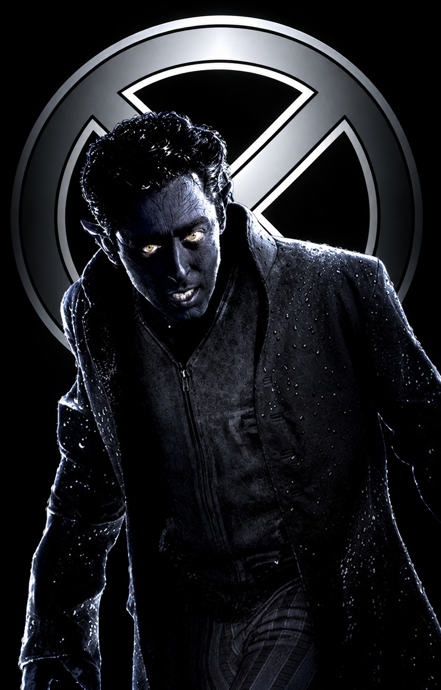

MUTANTES RELACIONADOS

ORIGEN BIOLÓGICO
MUTANTE DEMONÍACO BENIGNO
"La fe es mi brújula en la más densa oscuridad."
~ Kurt Wagner
K
Kurt Wagner, conocido como Nightcrawler, posee un aspecto demoníaco con piel azul, cola prensil y tres dedos, lo que contrasta drásticamente con su profunda fe católica y alma caballerosa. Su mutación le permite abrir portales a la dimensión del azufre, logrando realizar teletransportaciones espaciales instantáneas a corta distancia que dejan un rastro de humo y un característico sonido "BAMF". Es un acróbata excepcional y uno de los miembros más queridos de los X-Men.
PROCEDENCIA
TIERRA-616 / BAVIERA

UNIVERSO
MCU / MARVEL COMICS
MARVEL